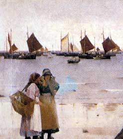
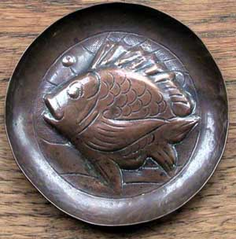
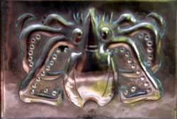

The Newlyn School of Painting.

Our section on the architectural roots of the Arts and Crafts movement described the importance of architects on its development. The Newlyn branch was an exception to this: it was established by artists, not architects. The painters who came to live in Newlyn, a fishing village in Cornwall, set up a 'plein air' school of painting, choosing to paint outdoors, in the open air. The success at the Royal Academy of the painting "A fish sale on a Cornish beach" by Stanhope Forbes helped to establish the Newlyn School in 1885. The painting owned by Plymouth Art Gallery (extract shown above) illustrates the interest in local people and the sense of realism typical of Newlyn painting. Supporters of the Newlyn School admired 'uncompromising realism' and 'absolute fidelity to nature'; values which sound familiar in the Arts and Crafts philosophy.
Newlyn

The fishing community in Newlyn was reliant on a whole range of crafts to support it, but the artists who settled there brought a new influence in their efforts to establish a craft industry with a strong artistic theme similar to the Guild of Handicrafts. J.D.Mackenzie ,an artist who settled at Newlyn was a key figure in setting up the Newlyn Industrial Class, assisted by the benefactor T.B.Bolitho, and artists Reginald Dick,T.C.Gotch and Perry Craft.
The inspiration for the class was the familiar theme of rescuing a community through handicrafts. The fishing industry was reliant on good weather,and the availability of mackerel,herring and pilchards or 'fair maids'. Bad weather or poor fishing meant poverty and enforced idleness, leaving the fisher lads open to drink and the "devil's" influence.

Norman Garstin writing in the Studio in 1896 describes the start of the school.
In the beginning there was a fretwork class carried on over a fish cellar in Newlyn ;....but then some artists were drawn into the competition who seemed to feel the inadequacy of fretwork or even woodcarving to keep Satan at bay and so copper and brass were introduced , and little trays and candle sticks etc were beaten by the fisher lads in the long winter nights in the loft above the fish curing yard by the sea.
John Pearson.
Little is known of John Pearson, a copper craftsman, possibly the most skilled of those working in the Arts and Crafts tradition around the turn of the nineteenth century. Pearson worked at the Guild of Handicrafts where he was the leading metalworker, responsible for creating repousse work exhibited by the Guild at the 1888 Arts and Crafts Exhibition. It is thought that he worked for William De Morgan at his tile works in London and may have developed his favourite motifs of birds, fish, galleons, and grotesque creatures under De Morgan's influence. An article in The Studio in 1896 described Pearson as imitating De Morgan tiles in beaten copper.
Pearson taught at the Newlyn Industrial Class from 1892 for about seven years, and his vigorous and creative talent was a crucial factor in the success of the Newlyn School. As Garstin (1896) says:
The artists felt they were technically very ignorant of the procedure of brass beating , too ignorant even to teach it, and filled with this hope, a metal beater named John Pearson who lives and makes charming objects of art from somewhere in Whitechapel came down to the Margins of Mounts Bay and taught the teachers his method.
Other Artists
Other artists known to have worked at the School include Phillip Hodder (who made the plaques for the Art Gallery at Newlyn) William P Wright, William Pezzack,Tom Batten,John Payne Cotton and Obed Nicholls. John Curnow,John Edgar Laity, George Mildren, and Joe Pengelly (initials JP signed on copper) are names also associated with the class at the time